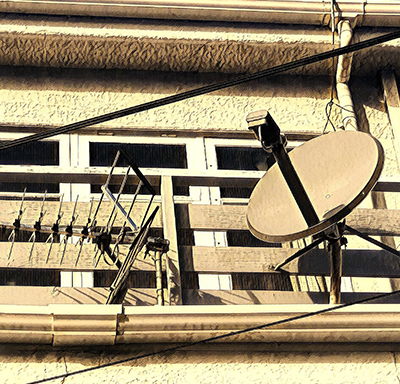
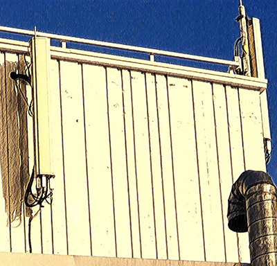

Antennas
Two antennas found together but in different shapes in a residential area are also often camouflages, although cell towers camouflages elsewhere (trees, church crosses, cactus) are relatively simple.

Cell Towers
Most of us are now using wireless networks or 3G/4G networks, which are connected to the network through cell towers. Generally, they're hard to see from the street - they're mostly on top of buildings. This is a signal tower I found on a building.